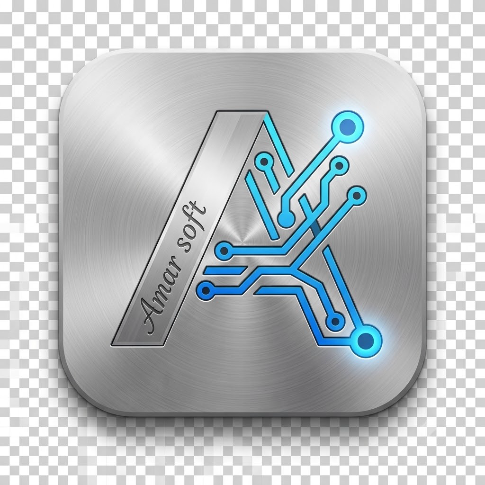

Amar Storage Sentinel
أداة هندسية خفيفة لمسح وتنظيف الأقراص الصلبة والألعاب دون تجميد النظام، مدعومة بمحرك خلفي آمن لتقليل إجهاد الـ HDD و SSD.
الموقع الرسمي لاستعراض وتحميل البرامج والأدوات الذكية المجانية

أداة هندسية خفيفة لمسح وتنظيف الأقراص الصلبة والألعاب دون تجميد النظام، مدعومة بمحرك خلفي آمن لتقليل إجهاد الـ HDD و SSD.

حزمة برمجية متكاملة بآلية أتمتة متقدمة لضغط وتقليل حجم الفيديو، تحسين التسجيلات الصوتية، وضغط المستندات والصور.

أداة هندسية متقدمة لتنظيف وتأمين متصفح Brave على مستوى النظام (System-Level) عبر سياسات Registry لإيقاف التتبع وتوفير الموارد.

أداة تشخيص فوري لقراءة بيانات S.M.A.R.T وحساب ساعات العمل الفعلية وفحص الصحة والتنبؤ بأعطال الأقراص الصلبة.